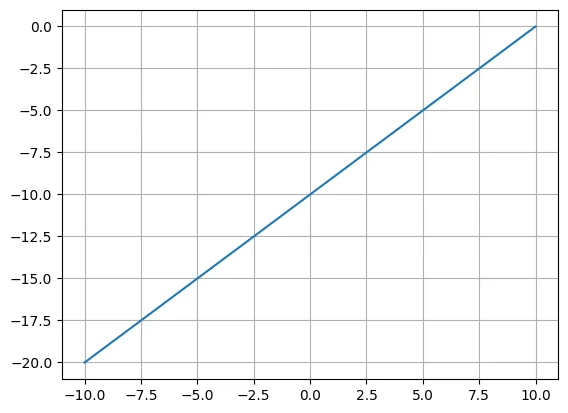
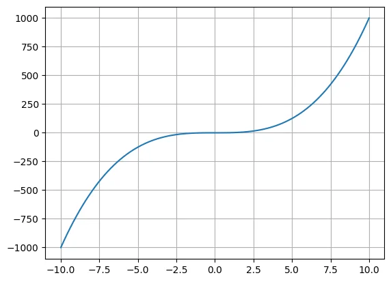
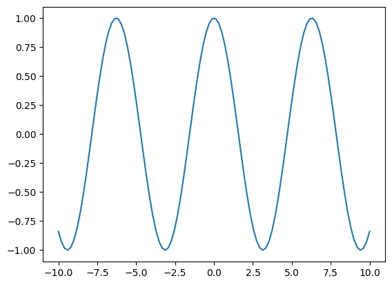
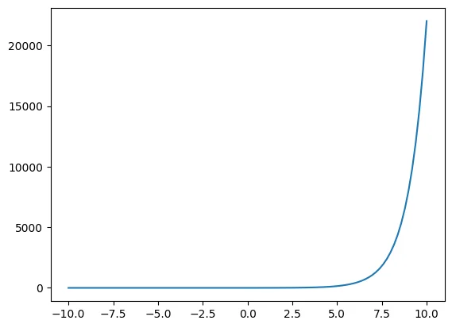
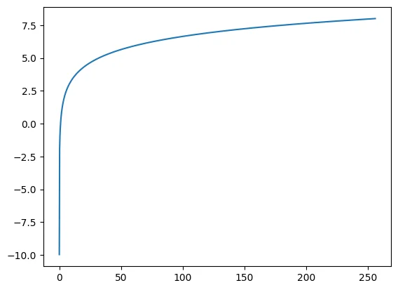
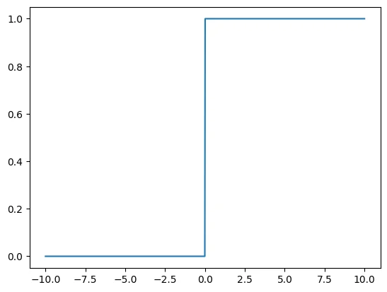
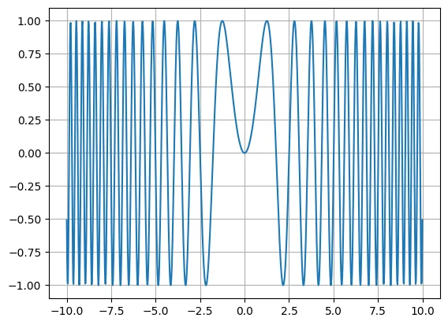

Proyecto · Matemáticas con Python
Funciones matemáticas en Python
En estos notebooks me propuse programar y graficar las funciones matemáticas más comunes utilizando NumPy y matplotlib: desde una simple recta hasta funciones compuestas. A continuación te muestro cada una con su fórmula y su gráfica.
- Python
- NumPy
- matplotlib
- Google Colab
- notebooks
- 2
- funciones graficadas
- 7
- familias de funciones
- 4
¿Cómo programamos una función?
En primer lugar creamos nuestra variable x con np.linspace, es decir, un conjunto de puntos entre dos valores. Luego definimos la función en Python y la aplicamos sobre x. Por ejemplo, para la función lineal:
m = 1
b = -10
def f(x):
return m*x+b
x = np.linspace(-10, 10, num=100)
y = f(x)
plt.plot(x, y)Con esta misma idea podemos graficar cualquier función. ¡Veámoslas!
1. Funciones algebraicas


2. Funciones trascendentes
Son funciones que no pueden ser expresadas con polinomios.



3. Funciones seccionadas
Son funciones que tienen diferentes valores definidos por un intervalo.

4. Funciones compuestas
En el segundo notebook combiné dos funciones: primero aplicamos g(x) = x² y después aplicamos f sobre el resultado, es decir, f(g(x)) = sen(x²).
# Creamos una funcion g
def g(x):
return x ** 2
# Creamos una funcion f
def f(x):
return np.sin(x)
# Aplicamos g en x y ahora aplicamos f en y
y = g(x)
f_o_g = f(y)
¿Qué aprendí?
Este proyecto me permitió repasar las funciones matemáticas desde dos lados: la teoría (su forma, dominio e imagen) y la programación. Es la base matemática de proyectos como mi regresión lineal, donde todo surge a partir de la función lineal.
¡No dudes en explorar el código! Si tienes alguna pregunta o sugerencia, no dudes en ponerte en contacto conmigo.